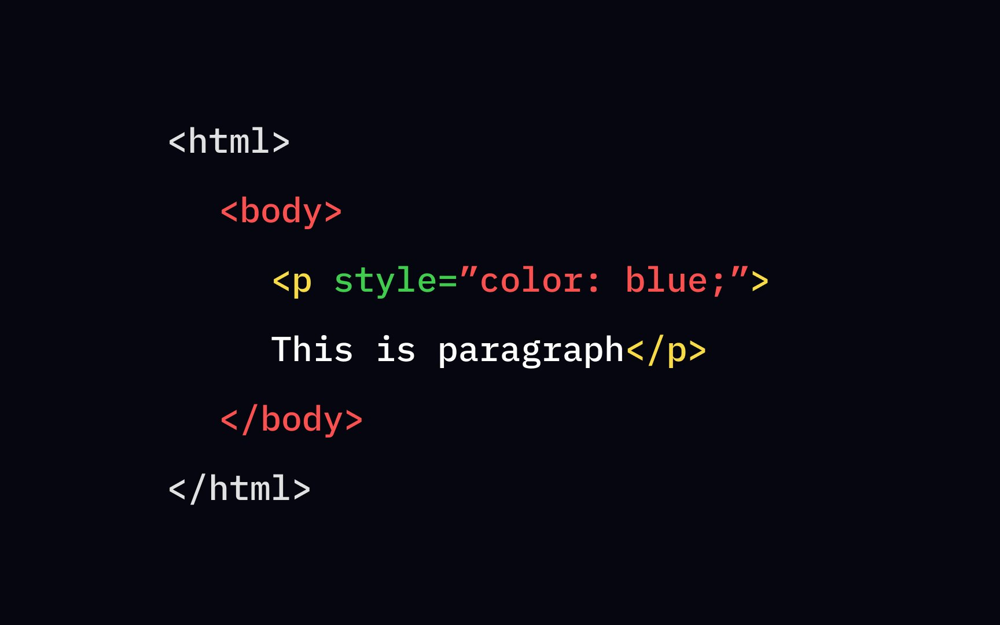
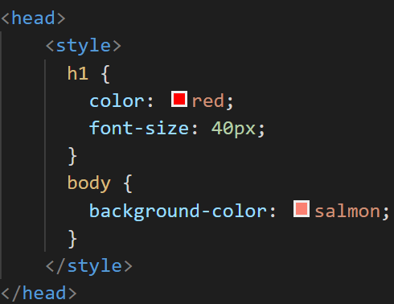
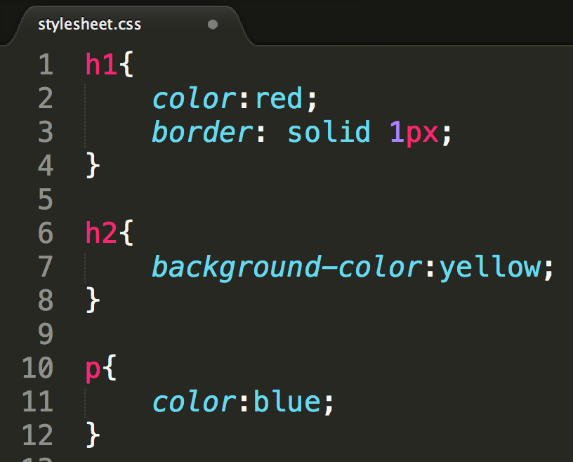

Inline Styling
The style attribute works in the same way as any other HTML attribute. We use style, followed by the equality sign (=), and then a quote where all of the style values will be stored using the standard CSS property-value pairs - "property: value;".

Internal Styling
Internal CSS is a form of CSS using which you can add CSS to HTML documents. It helps to design the layout of a single HTML web page and change the styles of a web page within HTML code.

External Styling
An external style sheet is a separate CSS file that can be accessed by creating a link within the head section of the webpage. Multiple webpages can use the same link to access the stylesheet. The link to an external style sheet is placed within the head section of the page.
